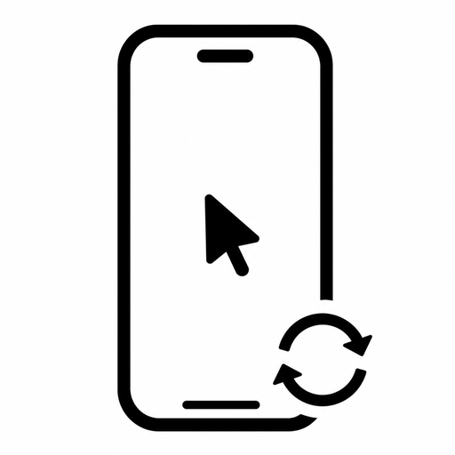

ioscpy
Mirror and control a jailbroken iPhone from macOS over USB.
Add to Sileo Add to ZebraTap the address to copy it, then add it by hand if the buttons do not open your package manager.

Mirror and control a jailbroken iPhone from macOS over USB.
Add to Sileo Add to Zebra